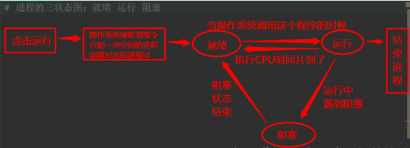

进程是计算机中最小的资源分配单位，进行中的一个程序就是一个进程。
进程需要操作系统来调度，每个程序运行起来的时候需要给分配一些内存,开启关闭切换时间开销大,进程之间数据隔离,进程也有数据不安全的问题 用Lock解决
就绪-->操系统调度 -->运行-遇到io操作->阻塞-阻塞状态结束->就绪
-时间片到了->就绪
进程的调度算法：给所有的进程分配资源或者分配CPU使用权的一种方法。
进程开启和关闭
父进程 开启了子进程
父进程 负责给 子进程回收子进程结束之后的资源
from multiprocessing import Process
import os
def func():
print(os.getpid(), os.getppid()) # pid process 子进程id ppid 父进程id
if __name__ == '__main__': # 只会在主进程中执行的所有的代码,写在__main__下边
print('main:', os.getpid(), os.getppid())
p = Process(target=func) # target表示调用对象，即子进程要执行的任务
p = Process(target=func,args=('安文',))
# p = Process(target=func,kwargs={'name':'安文'}) 两种传参方式
p.start() #异步非阻塞 启动进程，并调用该子进程中的p.run()
注意：在windows中Process()必须放到# if __name__ == '__main__':下
由于Windows没有fork，多处理模块启动一个新的Python进程并导入调用模块。
如果在导入时调用Process（），那么这将启动无限继承的新进程（或直到机器耗尽资源）。
这是隐藏对Process（）内部调用的原，使用if __name__ == “__main __”，这个if语句中的语句将不会在导入时被调用。开启进程的另一种方法：
from multiprocessing import Process
# class 类名(Process):
# def __init__(self,参数):
# self.属性名=参数
# super().__init__()
# def run(self):
# print("子进程要执行的代码")
# p=类名()
# p.start()Process类的一些其他方法和属性：name pid ident daemon terminate() isalive()
p.name 给子进程起名字
is_alive()方法由线程调用，有返回值，如果线程还存活，返回true，如果线程消亡，返回false
terminate() #强制结束子进程 异步非阻塞# 主进程会等待所有子进程结束，是为了回收子进程的资源
# 守护进程会等待主进程的代码执行结束之后再结束，而不是等待整个主进程结束
# 主进程的代码什么时候结束，守护进程就什么时候结束，和其他子进程的执行进度无关
主进程创建守护进程：
- 守护进程会在主进程代码执行结束后就终止
- 守护进程内无法再开启子进程，否则抛出异常
注意：进程之间是相互独立的，主进程代码运行结束，守护进程随即终止在start一个进程之前设置daemon=True,守护进程会等待主进程的代码结束就立即结束
p = Process(target=son2)
p.daemon = True # 一定要在p.start()前设置,表示设置p是一个守护进程
p.start()为什么守护进程只守护主进程的代码？而不是等主进程结束之后才结束
# 为了给守护进程回收资源
# 守护进程会等其他子进程结束吗？不会基于文件：同一台机器上的多个进程之间通信
Queue队列：基于socket的文件级别的通信来完成数据传递的，
队列：安全 管道：不安全
基于网络：同一台机器或者多台机器上的多进程之间的通信
第三方工具：(消息中间件):memcache/redis/rabbitmq/kafka
共享数据不安全，需要自己加锁解决数据安全问题
消费者:通常取到数据之后还要进行某些操作 消费者如何结束：None
生产者：通常在放数据之前需要先通过某些代码来获取数据
# 把原本获取数据处理数据的完整过程进行了解耦
# 把生产数据和消费数据分开，根据生产和消费的效率不同，
# 来规划生产者和消费者的个数，让程序的执行效率达到平衡
# 如果你写了一个程序所有的代码、和功能都放在一起
# 不分函数不分类也不分文件，就叫这个程序是紧耦合的程序
# 紧耦合程序：代码只写一次，不需要重构
# 松耦合的程序：需要重构，不断迭代 复用代码
# 拆分的很清楚的程序 叫做 松耦合的程序，松耦合程序好from multiprocessing import Queue,Pipe
# 队列:ipc进程之间通信，队列数据安全，不需要自己加锁。队列做通信，信息之间传递，
# 基于socket实现的，pickle实现，锁实现，
# pipe管道：也像队列一样，可以放数据可以取数据，没有锁数据不安全，
# 基于socket、pickle 实现的。没有锁 数据不安全
加锁可以保证多个进程修改同一块数据时，同一时间只能有一个任务可以进行修改，即串行修改，导致速度慢了，但保证了数据安全。
锁:保证数据安全，会降低程序的运行效率，数据安全
互斥锁，多进程中共享的数据需要加锁
# from multiprocessing import Lock #互斥锁，多进程中共享的数据需要加锁
# lock=Lock()
# lock.acquire()
# '''被锁的内容在这里写'''
# lock.release()
# with lock：
# ...
好，高效，多个cpu在自己的cpu上执行多个程序
一个cpu多个程序轮流执行，10个程序轮流使用一个cpu
多个程序同时执行，只要一个CPU,多个程序轮流在一个CPU上执行
宏观上：多个程序同时执行
微观上：多个程序轮流在一个CPU上执行，本质上是串行
阻塞:如果CPU不工作 input accept recv sleep connect
非阻塞：如果CPU在工作
# 同步阻塞：调用一个函数需要等待这个函数的执行结果，并且在执行这个函数的过程中CPU不工作 num=input('>>>')
# 同步非阻塞：调用一个函数需要等待这个函数的执行结果，并且在执行这个函数的过程中CPU工作 ret=eval(1+2+3+4)
# 异步非阻塞:start() 调用一个函数不需要等待这个函数的执行结果，并且在执行这个函数的过程中CPU工作
# 异步阻塞:调用一个函数不需要等待这个函数的执行结果，并且在执行这个函数的过程中CPU不工作
# 10个异步的进程，获取这个进程的返回值，并且能做到哪一个进程结束，就先获取谁的返回值
# 同步阻塞
# 调用函数必须等待结果，cpu没工作，input sleep recv accept content get
# 同步非阻塞 *******
# 调用函数必须等待结果，cpu工作了，调用了一个高计算的函数 ，strip,eval,max,sorted同步非阻塞
# 异步阻塞
# 调用函数不需要立即获取结果，而是继续做其他的事情，在获取结果的时候不知道先获取谁的，但是总之要等
# 异步非阻塞 *******
# 调用函数不需要立即获取结果，也不需要等 start terminate
线程是计算机中能被CPU调度的最小单位，线程是进程中的一个单位，不能脱离进程存在，线程必须存在进程内。cpu执行的是解释之后的线程中的代码，同一个进程中的多个线程可以同时被CPU执行。线程之间的数据是共享的，操作系统调度的最小单位，可以利用多核，操作系统调度，数据不安全，开启关闭切换时间开销非常小
GC:垃圾回收机制，就是一个线程
pypy解释器 gc不能用多核
jpython解释器 gc能利用多核
# import time
# from threading import Thread
# def func(i):
# print("start%s"%i)
# time.sleep(1)
# print("end%s"%i)
# for i in range(10):
# Thread(target=func,args=(i,)).start()
# 面向对象方式起线程
# from threading import Thread
# class MyThread(Thread):
# def __init__(self,a,b):
# self.a=a
# self.b=b
# super().__init__()
# def run(self):
# print(self.ident)
# t=MyThread(1,2)
# t.start() #开启线程 才在线程中执行run方法
# print(t.ident)
# 线程是不能从外部关闭的 没有terminate
# 所有的子线程只能是自己执行完代码之后就关闭
# current_thread() 当前线程的对象,current_thread().itent()线程的id
# enumerate() 列表 存储了所有活着的线程对象,包括主线程和子线程
# active_count() 数字 存储了所有活着的线程个数
主线程会等子线程结束之后才结束，子线程不结束，主线程就不结束
;因为主线程结束进程就会结束
守护线程会在主线程的代码结束之后继续守护其他子线程
# 守护进程 会随着主进程的代码结束而结束，
# 如果主进程代码结束之后还有其他子进程在运行，守护进程不守护
# 守护线程 会随着主线程的结束而结束
# 如果主线程代码结束之后还有其他子线程在运行，守护线程也守护
# 守护进程和守护线程的结束原理不同
# 守护进程需要主进程来回收、守护线程是随着进程的结束才结束；所有的线程都会随着进程的结束而被回收的
# 其他子线程-->主线程结束-->主进程结束-->整个进程中所有的资源都被回收-->守护线程也会被回收
# += -= *= /= while if 数据不安全 +和赋值是分开的两个操作
# append pop strip数据安全
# 列表中的方法或者字典中的方法去操作全局变量的时候 数据安全
import time
class A:
from threading import Lock
__instance=None
lock=Lock()
def __new__(cls, *args, **kwargs):
with cls.lock:
if not cls.__instance:
time.sleep(0.000001)
cls.__instance=super().__new__(cls)
return cls.__instance
def func():
a=A()
print(a)
from threading import Thread
for i in range(10):
Thread(target=func).start()
多把（互斥锁/递归）锁并且在多个线程中交叉使用，（比如：两把锁，在第一把锁没有释放之前就获取第二把锁）
队列：queue；
线程队列特点：数据安全，一定是加锁了,先进先出
# multiprocessing 模块 仿照threading写的pool
# concurrent.futures模块，线程池和进程池都能够用相似的方式开启和使用
#ThreadPoolExecutor：线程池，提供异步调用
#ProcessPoolExecutor: 进程池，提供异步调用
import time
import random
from threading import current_thread
from concurrent.futures import ThreadPoolExecutor,ProcessPoolExecutor
def func(a,b):
print(current_thread().ident,'start',a,b) #接收参数
time.sleep(random.randint(1,4))
print(current_thread().ident,'end')
tp=ThreadPoolExecutor(4)
for i in range(20):
tp.submit(func,i,i+1) #按位置传参数
tp.submit(func, a=i, b=i + 1) #关键字传参数
进程池（高计算场景，没有io（没有文件操作、没有数据库操作、没有网络操作
、没有input））
import os
import time
import random
from concurrent.futures import ThreadPoolExecutor,ProcessPoolExecutor
def func(a,b):
print(os.getpid(),'start',a,b) #接收参数
time.sleep(random.randint(1,4))
print(os.getpid(),'end')
if __name__ == '__main__':
pp=ProcessPoolExecutor(4)
for i in range(20):
pp.submit(func,i,i+1) #按位置传参数
pp.submit(func, a=i, b=i + 1) #关键字传参数
import time
import random
from threading import current_thread
from concurrent.futures import ThreadPoolExecutor,ProcessPoolExecutor
def func(a,b):
print(current_thread().ident,'start',a,b) #接收参数
time.sleep(random.randint(1,4))
print(current_thread().ident,'end',a)
return （a,a*b)
def print_func(ret): #异步阻塞
print(ret.result())
if __name__ == '__main__':
tp=ThreadPoolExecutor(4)
for i in range(20): #提交任务是异步非阻塞
ret=tp.submit(func,i,i+1) #按位置传参数
ret.add_done_callback(print_func) #异步阻塞
# 回调函数 给ret对象绑定一个回调函数，等待ret对应的任务有了结果之后立即调用print_func这个函数
# 就可以对结果立即进行处理，而不用按照顺序接收处理结果
# 切换并规避io操作的模块：
# gevent:利用了greenlet底层模块完成的切换+自动规避io的功能
# asyncio:利用了yield底层语法完成的切换+自动规避io的功能
# tornado异步的web框架
# yield from:为了更好的实现协程
# send为了更好的实现协程
# asyncio 模块 基于Python原生的协程的概念正式被成立
# 特殊的在Python中提供协程功能的关键字：aysnc await
import gevent
def func():
print('start func')
gevent.sleep(1)
print('end func')
g=gevent.spawn(func)
g1=gevent.spawn(func)
gevent.joinall([g,g1])
import asyncio
async def func(name): #async协程函数
print("start",name)
#await 关键字必须写在async函数里
await asyncio.sleep(1) #await后面可能会生成阻塞的方法
print('end')
loop=asyncio.get_event_loop() #事件循环
loop.run_until_complete(asyncio.wait([func('wudi'),func('anwen')]))
# 进程：进程之间数据隔离，数据不安全，由操作系统（级别）切换，开销非常大，能利用多核
# 线程：线程之间数据共享，数据不安全，由操作系统（级别）切换，开销小,不能利用多核
# 协程：协程之间数据共享，数据安全 ，用户级别，开销更小，不能利用多核，协程的所有切换都基于用户，那么只有在用户级别
# 能够感知到的io操作才会用协程模块来切换来规避(socket,请求网页的)
asyncio
async def func(name): #async协程函数
print("start",name)
#await 关键字必须写在async函数里
await asyncio.sleep(1) #await后面可能会生成阻塞的方法
print('end')
loop=asyncio.get_event_loop() #事件循环
loop.run_until_complete(asyncio.wait([func('wudi'),func('anwen')]))
# 进程：进程之间数据隔离，数据不安全，由操作系统（级别）切换，开销非常大，能利用多核
# 线程：线程之间数据共享，数据不安全，由操作系统（级别）切换，开销小,不能利用多核
# 协程：协程之间数据共享，数据安全 ，用户级别，开销更小，不能利用多核，协程的所有切换都基于用户，那么只有在用户级别
# 能够感知到的io操作才会用协程模块来切换来规避(socket,请求网页的)